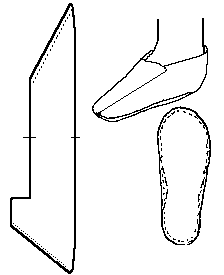

Haithabu Shoe (c.9th-10th Centuries)
Based on a shoe found in Haithabu (Hedeby), Germany. There were 117 different types of shoe found there, most of which were made from goatskin.This design is based on a description found in
Roesdahl.
Return to
[Index] or
[Next]
Footwear of the Middle Ages - Historical Shoe Designs/Number 65, by I. Marc Carlson. Copyright 1998
This page is given for the free exchange of information, provided the Author's Name is included in all future revisions, and no money change hands, other than as expressed in the Copyright Page.